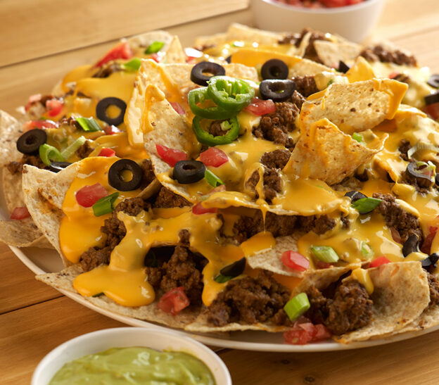

Carne Asada Nachos

Classic Mexican style nachos with carne asada, cheese, and toppings of your choice.
Ingredients
- Tortilla chips
- Carne asada
- Refried beans
- Toppings
- Nacho cheese
- Sour cream
Steps
- Get your ingredients ready
- Add your refried beans to your nachos
- Add your nacho cheese and sour cream
- Add your carne asada
- Apply your toppings
- Enjoy!